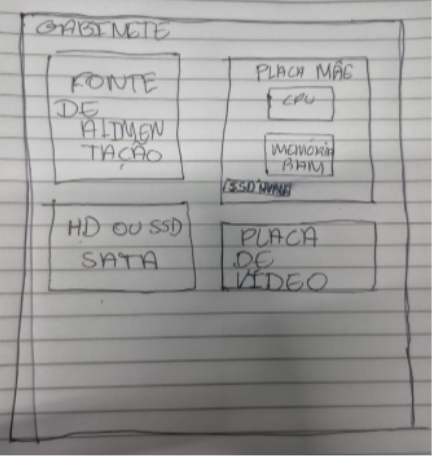

Pergunta 1
Qual é, em termos gerais, a distinção entre organização e a arquitetura do computador?
Arquitetura de Computadores: é o projeto conceitual fundamental da estrutura
operacional de um sistema computacional.
Organização de Computadores: é o estudo da estrutura e do funcionamento do
hardware de um sistema computacional.
Ela se concentra em como os dispositivos de
hardware são interconectados para formar um sistema funcional.
Pergunta 2
O que é hierarquia?
hierarquia de memória organiza diferentes tipos de memória em níveis, com base em sua velocidade, capacidade e custo. Essa hierarquia é crucial para maximizar a eficiência do processamento, pois permite que os dados mais frequentemente acessados estejam disponíveis rapidamente, enquanto dados menos usados são armazenados em níveis mais lentos e econômicos.
Pergunta 3
Qual é a distinção entre a estrutura e a função do computador?
A estrutura refere-se à organização e interconexão dos componentes físicos do
sistema. Ela descreve como os elementos estão conectados e como interagem entre si.
A função refere-se às operações realizadas por cada componente da estrutura. É o
papel que cada parte desempenha no funcionamento geral do sistema.
Pergunta 4
Quais são as quatro funções principais de um computador? Explique cada uma delas.
As quatro funções principais de um computador são: entrada, processamento, saída e armazenamento.
- Entrada
- A função de entrada refere-se ao processo de inserir dados ou informações no
computador.
Dispositivos como teclados, mouses, scanners, microfones são dispositivos que permitem a entrada de dados. - Processamento
- O processamento envolve a execução de operações aritméticas, lógicas e de controle
sobre os dados inseridos.
A Unidade Central de Processamento (CPU) é o componente principal responsável por essa função. - Saída
- A saída é o resultado do processamento dos dados, que pode ser apresentado ao
usuário.
Monitores, impressoras, alto-falantes são dispositivos que permitem a saída de dados. - Armazenamento
- O armazenamento refere-se à capacidade do computador de manter dados mesmo
quando desligado.
Isso é realizado por dispositivos como discos rígidos (HDDs), unidades de estado sólido (SSDs), memória RAM, etc.
Pergunta 5
Liste e defina resumidamente os principais componentes estruturais de um computador. Pode criar um desenho dessa estrutura.
Componentes:
- Placa Mãe
- CPU
- Memória RAM
- Fonte de alimentação
- Memória secundária (como HD e SSD)
- Dispositivos de entrada e saída
- Gabinete
- Plana de vídeo (não essencial)
Desenho:
